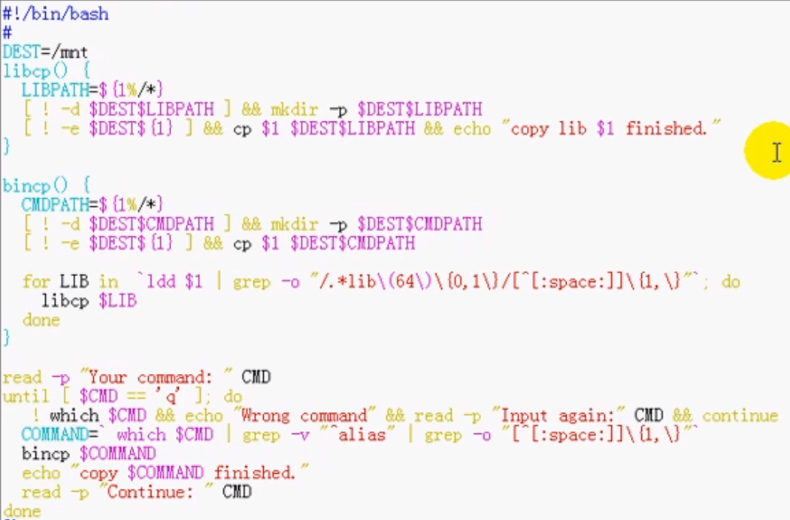

#!/bin/bash
d_dir=/mnt
cmd_cp (){
path=${1%/*}
! test -d
${d_dir}${path} && mkdir ${d_dir}${path}
-p
cp -a $1 ${d_dir}${path}
&& echo "$cmd 拷贝完成"
lib_cp
$1
}
lib_cp (){
for
file in `ldd $1 | egrep -o "/.*/.*\
"`
do
path=${file%/*}
src_file=`ls -al ${file}|awk -F" " '{print
$NF}'`
! test -d ${d_dir}${path} && mkdir -p
${d_dir}${path}
cp -av ${file} ${path}/${src_file}
${d_dir}${path}
done
}
read -p "按Q退出，请输入需要的命令:" cmd
until [ "${cmd}" == "q"
]
do
! which ${cmd} &&
read -p "无法找到该文件，请重新输入：" cmd &&
continue
cmd=`! which
${cmd}`
cmd_cp
${cmd}
read -p "按Q退出， 输入需要的命令:"
cmd
done
echo "ok"
